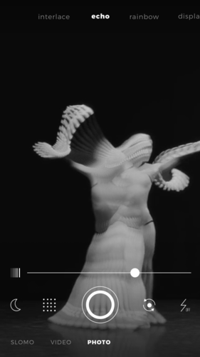
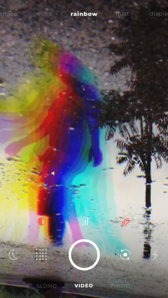

Defekt 深度盘点：把艺术特效塞进取景框的安卓相机到底能玩出什么
实时艺术特效相机 Defekt 的能力面完整梳理——从遮罩系统到参数面板，从实时渲染到短视频创作，看看这款不走寻常路的相机能给手机影像带来什么新玩法。
市面上的相机应用太多了，多到"特效相机"四个字本身已经成了一种审美疲劳。磨皮、美白、大眼、一键滤镜——这些功能在每家产品里都长得差不多，区别只是模板库里堆了多少预设。Defekt 不一样。它从底层就没站在"先拍后套"那条流水线上，而是把整个工作流的顺序翻了个面：特效在取景框里就已经生效了——想亲眼感受这种差异可以去Defekt官网上看它的演示片段。
这种顺序反转带来的体验差异，远比多装几个滤镜包要大得多。你还没按快门，画面已经是风之条纹、彩虹重影、水彩融化之后的样子——找角度、调参数、切换特效，全部实时响应。按下快门就是成片，录制中也能直接滑动换特效，甚至可以叠加多种效果一次成型。本文就从 Defekt 这款应用的核心能力域出发，做一次系统性的盘点。
能力域一：实时特效渲染——取景框即成片
这是 Defekt 最根本的差异点，也是所有其他功能的前提。传统滤镜相机的流程是：原生相机拍原图 → 进编辑器 → 选滤镜 → 调参数 → 反复预览 → 导出。Defekt 把滤镜和参数调整的步骤全部前置到了取景框阶段——还没拍，画面已经过了特效处理。

这件事说起来简单，实际体验差别非常大。在编辑器里调特效，你面对的是一张静态的照片，调一个参数点一次预览，来回切几次就烦了。在取景框里调，特效跟着手机晃，主体一动效果也跟着动，参数旋钮一转画面即时反馈。这种"所见即所得"的沉浸感，是任何后期软件都做不到的。
它提供的特效也不是那种审美模板，而是风之条纹、回声拖影、彩虹重影、水彩融化这类把画面推向另一种介质的风格化变形。不是把人变得更"好看"，而是把画面变得更"有感觉"。对短视频创作者来说尤为重要——录制过程中可以直接滑动切换特效，不用后期拼接，一次录制就能产出视觉上有节奏变化的片段。
能力域二：形状遮罩系统——只让局部有特效
如果说实时渲染解决的是"何时生效"的问题，那形状遮罩解决的就是"在哪里生效"的问题。特效全开时整个画面都是同一个效果，很容易出现两种尴尬：要么特效破坏了背景的信息（比如文字、场景元素被模糊或变形），要么特效强度拉低后主体上的效果也跟着变淡。
形状遮罩让你可以把特效限制在画面的某个形状区域内——遮罩里面是特效渲染后的样子，遮罩外面保持原始画面。两者之间的对比和分层，立刻让画面有了质感。Defekt 内置了二十多种遮罩形状，大致可以分成几个家族：
- 基础几何类：圆形（最通用，特写人像脸部遮罩）、方形（对称构图）、矩形（长条区域）、椭圆（竖版人像上半身）
- 心形类：标准心形和大头心形，情侣合影和自拍的爱心区域专用
- 星形类：五角星、六角星，实验感和魔法感画面
- 钻石类：标准钻石和长钻石，静物中心高光区域
- 特色类：圆环、月牙、云朵、光斑、胶片框、箭头等小众形状
遮罩本身也有四个可调参数：大小、位置、反转、边缘羽化。大小决定遮罩在画面里的占比，位置可以手动拖动或用 X/Y 偏移滑块微调，反转则把特效区和原始区对调——原来遮罩内有特效，反转后遮罩外有特效，特别适合做"主体清晰、背景特效化"的人像。边缘羽化决定遮罩边界是硬切还是渐变过渡，中等羽化是绝大多数场景的选择。

遮罩的具体拍法非常灵活。比如圆形遮罩配合 dilate 特效拍人像特写，圆形内的人脸是水彩融化效果，圆形外的背景保持正常；心形遮罩配合 rainbow 拍情侣合影，心形内是 RGB 分离的彩边，心形外正常；遮罩反转配合 wind 特效，主体正常、背景是风之条纹，画面边缘会"坏"掉但主体不受影响。更多遮罩组合的拍法可以翻Defekt文档里的专门章节。
能力域三：参数面板与旋钮——把调参变成一种手感
实时渲染和形状遮罩是 Defekt 的两大核心骨架，但真正让它好用的，是参数面板的交互设计。它不是一堆滑块和数值框的堆砌，而是把每种特效的关键参数提炼成几个旋钮，直接放在取景框旁边，手指一滑就能调。
不同的特效有不同的参数组合：风之条纹的条纹方向和密度、回声拖影的残影数量和延迟、彩虹重影的色彩分离强度——每种参数的变化都在取景框里即时可见，没有"调完点预览"那层等待。遮罩的位置调整也很直观：有的版本支持直接在取景框里拖动遮罩中心，有的版本有专门的 X/Y 偏移滑块，还有的版本双击遮罩中心会弹出位置菜单。三种方式并行，用户挑顺手的来。
边缘羽化的三档选择（0、中等、最大）也是一个好设计。0 是硬切，特效区和原始区有清晰分界线，适合硬派风格；中等是渐变过渡，两种状态自然融合，覆盖大部分场景；最大是非常模糊的边缘，两种状态几乎无法区分，用来做微妙的效果。三档比一个连续滑块更省决策成本。
能力域四：环境与权限配置——稳定运行的基础
Defekt 虽然是个轻量的相机应用，但它对系统权限的要求比普通相机 App 要严格一些——毕竟核心功能就是实时渲染特效，相机权限一旦出问题，整个应用就用不了。安装包可以直接从Defekt下载拿到，装完之后首次打开记得把权限都放开。
最常见的故障是相机权限丢失，三种场景都可能触发：首次启动时拒绝过相机权限、安卓系统大版本更新后权限被重置、其他相机类 App 在后台锁定了相机硬件。排查路径也很清晰——进系统设置找应用管理，定位到 Defekt（包名 co.defekt.defektCamera），在权限管理里把相机开关打开；如果还不行就关掉所有其他相机类 App，实在不行重启手机释放硬件锁定。除了相机权限，麦克风权限是可选但强烈建议开启的（音频响应类特效需要它），存储权限则是必须的（保存照片视频）。
建议把相机权限设为"始终允许"，因为每次打开都弹权限请求会打断使用节奏。Defekt 的麦克风权限和相机权限是独立的——相机权限正常但麦克风被拒绝时，取景框能打开，只是声音驱动类特效无法工作，拍照、录屏、其他特效不受影响。
短板也要说
Defekt 不是一款没有缺陷的产品。首先，它只支持安卓平台，iOS 用户目前用不了。其次，内置特效的数量不算多，虽然每种特效的可调空间都不小，但如果审美需求非常多元，可能会觉得选择有限。第三，实时渲染对手机性能有一定要求——老款设备上可能会出现帧率下降、发热明显的情况。第四，遮罩形状虽然有二十多种，但相对位置固定在画面中心区域，如果需要把遮罩放在非常边角的位置，调整起来会比较麻烦。
另外，Defekt 的定位是实验影像和视觉创意，不是主流审美。如果你想要的是一键拍完美证件照、美颜到亲妈不认、或者一套现成的爆款短视频模板，那它可能不是你的菜。它提供的是一种创作工具，不是审美代劳。
什么样的人该用它
Defekt 适合三类人。
第一类是社交平台的内容创作者——TikTok、抖音、快手等平台的短视频用户，需要快速产出视觉上有记忆点的素材。实时特效渲染让录制过程本身就是创作过程，不用后期拼接就能有节奏变化的片段；遮罩系统提供了"半特效半原图"的层次感，比全特效更耐看。
第二类是喜欢实验影像的学生或独立创作者——用手机就能玩出专业实验短片的质感，不需要昂贵的相机或复杂的后期软件。风之条纹、彩虹重影、水彩融化这类变形效果，配合遮罩的局部限定，能拍出很多"不像手机拍的"画面。
第三类是不想学复杂后期的普通用户——不用 PR、不用剪映，在取景框里就能调出让人眼前一亮的效果。调参本身变成了一种手感，滑动旋钮看到画面即时变化的过程，其实是在用一种比编辑器更直觉的方式和画面互动。
总结一下：Defekt 的核心价值在于把"特效编辑"这件事从后期提前到了拍摄前，实时渲染是它的地基，形状遮罩是它的差异化亮点，参数面板的交互设计让它真正好用。它不一定适合所有人，但如果你想让手机影像跳出"拍完再套滤镜"的固定流程，值得花时间认真玩一下。
这套资料我同步维护在三个代码仓库里，方便不同网络环境下访问——GitHub上有完整目录，Gitee在国内拉取更快，GitCode作为额外备份。